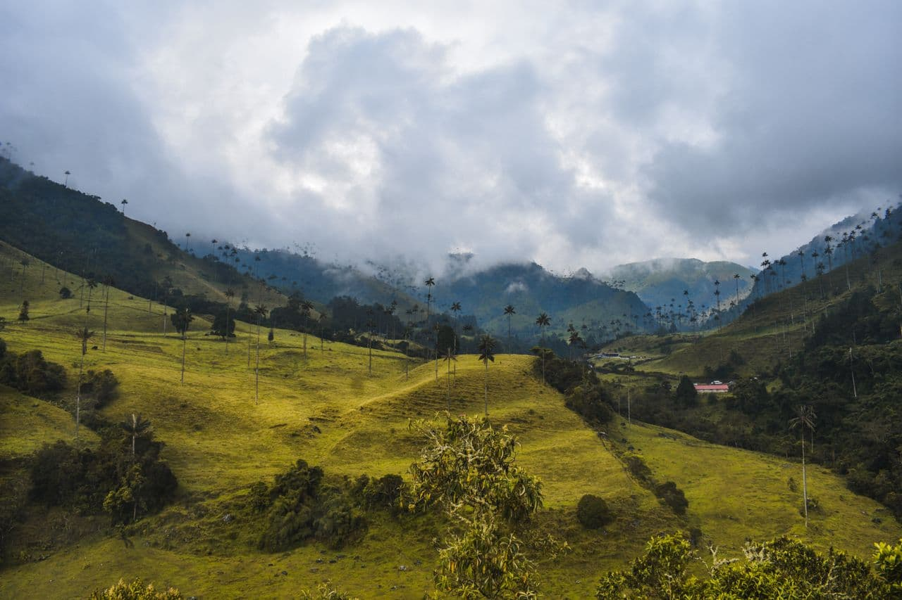
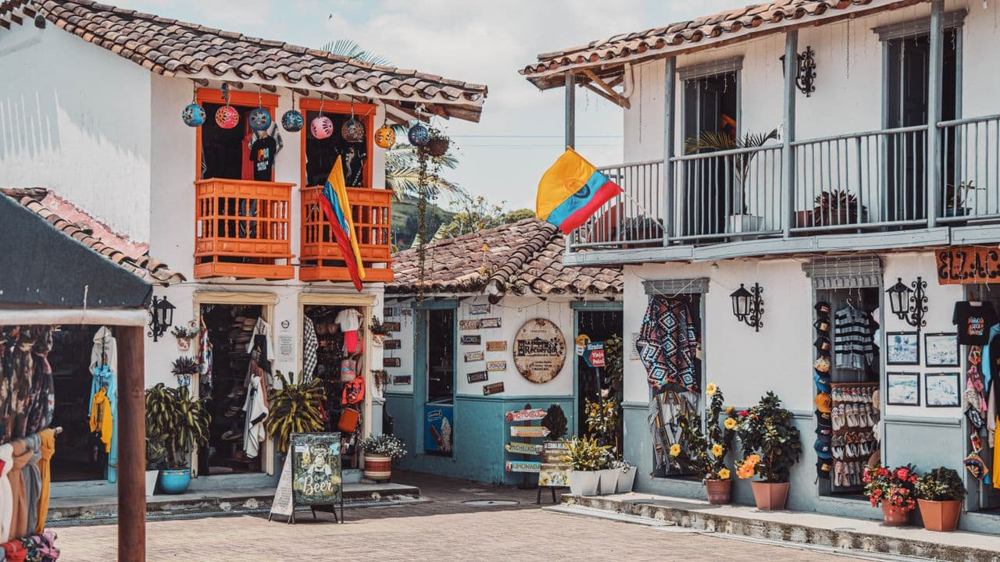
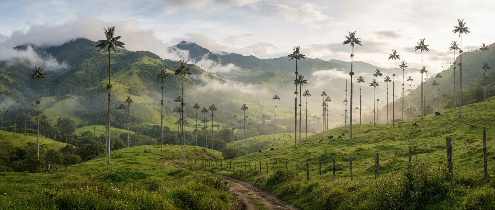
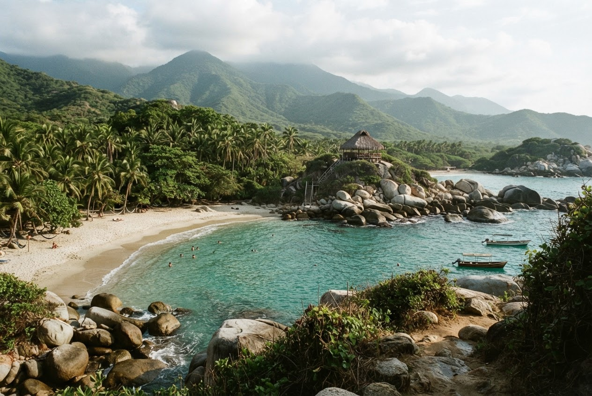
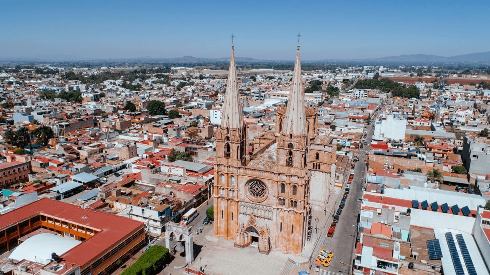
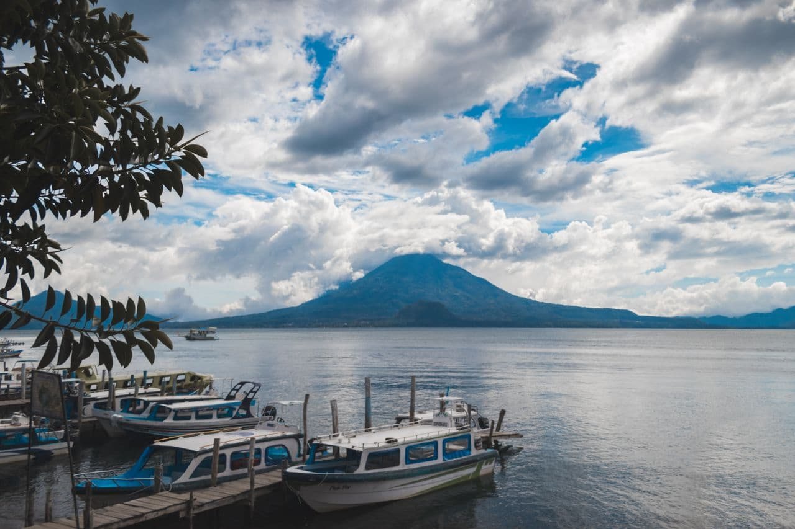
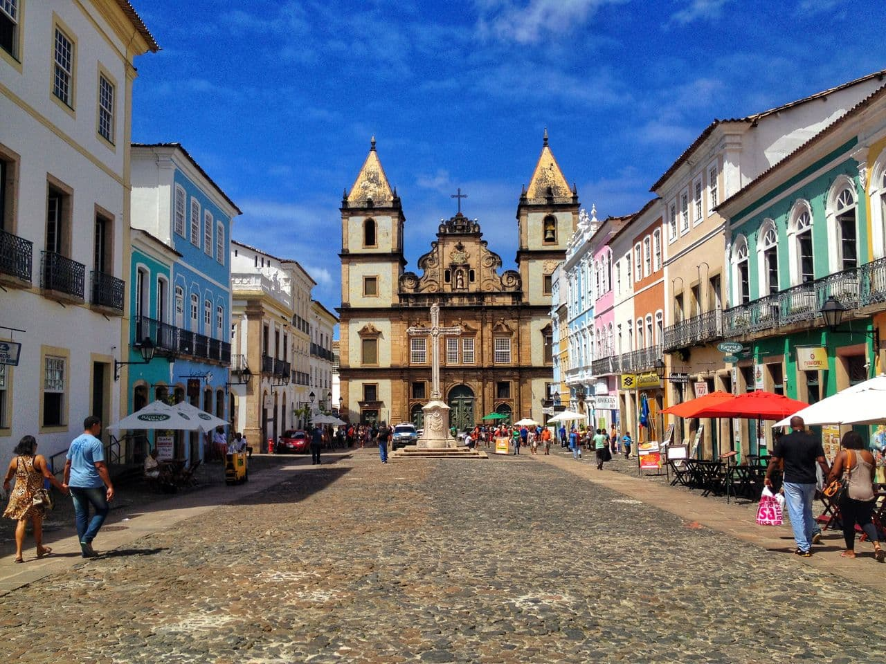

Valle de Cocora, Quindío · Entre palmas y montañas.

Valle de Cocora, Quindío · Entre palmas y montañas.
Del caribe a lo Andes, un país que se descubra sin prisa.
Republica de colombia
En la cordillera Oriental
COP · $
Lenguas indígenas cooficiales en sus territorios
Estimación · 2025
Colombia no cabe en una sola postal. En Bogotá, las plazas de mercado y los museos conversan con la montaña; en el Caribe, las calles de Cartagena se abren a músicas y memorias afrocolombianas. Entre una región y otra cambian el clima, la mesa y la manera de contar una historia. En el Eje Cafetero, conocer una finca es acercarse a los saberes detrás de cada taza. Más allá esperan páramos, selvas y dos océanos. Viajar con tiempo, escuchar a las comunidades y elegir guías locales permite descubrir un país de muchas voces, sin reducirlo a sus paisajes.
Depende de la región. En los Andes y el Caribe, diciembre–marzo suele ser menos lluvioso; el Pacífico y la Amazonía tienen otros ritmos.
PRESUPUESTOComo orientación: 180.000–350.000 COP al día por persona, con alojamiento sencillo, comidas y transporte local. Sin vuelos ni tours; varía por ciudad y temporada.
REGIÓNAmérica del Sur · Caribe, Andes, Pacífico, Orinoquía y Amazonía.

BOLÍVAR · CARIBEMurallas, balcones y la vida de barrio en Getsemaní.

QUINDÍO · ANDESSenderos entre palmas de cera y montañas de niebla.

MAGDALENA · CARIBEEl bosque se encuentra con el mar al pie de la Sierra Nevada.

Mercados, cocinas regionales y ciudades donde el pasado conversa con el presente.
NORTE
Lenguas y culturas mayas vivas, volcanes y pueblos a orillas del lago Atitlán.
CENTRO · EXPLORAR PAÍS
Un país de muchas voces: herencias indígenas, afrobrasileñas y migrantes.
SURCuéntanos cómo te gusta viajar y te sugerimos un país para empezar.